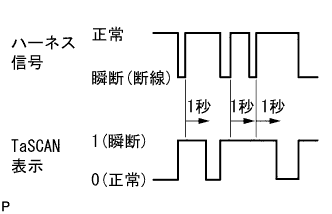
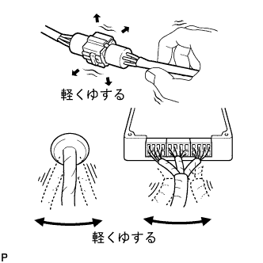

ABS with EBD & TRC & VSC & BA System ECU Data Monitor / Active Test |
Turn the IG OFF and connect the SST (TaSCAN) to DLC3.
Turn the IG ON and check the ECU data following the screen display of the SST (TaSCAN).
| Item Name [Symbol] | Item Description / Display Range | Standard Value | Remarks |
|---|---|---|---|
| Solenoid SFRH [SFRH] | Indicates front right hold solenoid status Display range: OFF - ON | OFF: ABS not operating ON: ABS operating | - |
| Solenoid SFRR [SFRR] | Indicates front right pressure reduction solenoid status Display range: OFF - ON | OFF: ABS not operating ON: ABS operating | - |
| Solenoid SFLH [SFLH] | Indicates front left hold solenoid status Display range: OFF - ON | OFF: ABS not operating ON: ABS operating | - |
| Solenoid SFLR [SFLR] | Indicates front left pressure reduction solenoid status Display range: OFF - ON | OFF: ABS not operating ON: ABS operating | - |
| Solenoid SRRH [SRRH] | Indicates rear right hold solenoid status Display range: OFF - ON | OFF: ABS not operating ON: ABS operating | - |
| Solenoid SRRR [SRRR] | Indicates rear right pressure reduction solenoid status Display range: OFF - ON | OFF: ABS not operating ON: ABS operating | - |
| Solenoid SRLH [SRLH] | Indicates rear left hold solenoid status Display range: OFF - ON | OFF: ABS not operating ON: ABS operating | - |
| Solenoid SRLR [SRLR] | Indicates rear left pressure reduction solenoid status Display range: OFF - ON | OFF: ABS not operating ON: ABS operating | - |
| Solenoid SM2 [SM2] | Indicates rear master pressure solenoid status Display range: OFF - ON | OFF: Brake assist not operating ON: Brake assist operating | - |
| Solenoid SM1 [SM1] | Indicates front master pressure solenoid status Display range: OFF - ON | OFF: Brake assist not operating ON: Brake assist operating | - |
| Solenoid Relay [SOL] | Indicates solenoid relay operation Display range: OFF - ON | ON: IG ON | - |
| Fail-safe Motor Relay [FSMR] | Indicates fail-safe motor relay operation Display range: OFF - ON | OFF: In fail-safe ←→ Not in fail-safe ON: Not in fail-safe | - |
| Motor Relay 1 [MRL1] | Indicates motor relay operation Display range: OFF - ON | OFF: Motor not operating ON: Motor operating | - |
| Stop Switch [STP] | Indicates stop light switch operation Display range: OFF - ON | OFF: Brake pedal released ON: Brake pedal depressed | - |
| Parking Brake [PKB] | Indicates parking brake operation Display range: OFF - ON | OFF: Parking brake released ON: Parking brake applied | - |
| Shift Lever Position [SIFT] | Indicates shift lever position Display range: Unknown - Lo-2 speed - 3 speed - 4 speed - 5 speed - 6 speed - D/M - P, N - R | P, N: Shift lever position "P" or "N" R: Shift lever position "R" D/M: Shift lever position "D" or "M" | - |
| Gear Position [GPOS] | Indicates transmission gear position Display range: Unknown - Lo-2 speed - 3 speed - 4 speed - 5 speed - 6 speed - D/M - P, N - R | P, N: Shift lever position "P" or "N" R: Shift lever position "R" Changes among Lo, 2 speed, 3 speed, 4 speed, 5 speed and 6 speed according to the transmission status | - |
| Shift Status [CHGP] | Indicates transmission shift status Display range: Shifting - Not shifting | Shifting: Transmission shifting Not shifting: Transmission not shifting | - |
| Idle Switch [IDL] | Indicates throttle valve fully closed Display range: OFF - ON | OFF: Accelerator pedal depressed ON: Accelerator pedal released | - |
| Buzzer [BUZZ] | Indicates skid control buzzer status Display range: OFF - ON | OFF: Skid control buzzer not sounding ON: Skid control buzzer sounding | - |
| ABS Light [ABSL] | Indicates ABS warning light status Display range: OFF - ON | OFF: ABS warning light off ON: ABS warning light on | - |
| Brake Warning Light [BKWL] | Indicates brake warning light status Display range: OFF - ON | OFF: Brake warning light off ON: Brake warning light on | - |
| SLIP Light [SLIP] | Indicates slip indicator light status Display range: OFF - ON | OFF: Slip indicator light off ON: Slip indicator light on | - |
| VSC Warning Light [VSCL] | Indicates VSC warning light status Display range: OFF - ON | OFF: VSC warning light off ON: VSC warning light on | - |
| ABS Control (FR) [ASFR] | Indicates ABS control status of front right wheel Display range: Controlling - Not controlling | Controlling: Front right wheel under ABS control Not controlling: Front right wheel not under ABS control | - |
| ABS Control (FL) [ASFL] | Indicates ABS control status of front left wheel Display range: Controlling - Not controlling | Controlling: Front left wheel under ABS control Not controlling: Front left wheel not under ABS control | - |
| ABS Control (RR) [ASRR] | Indicates ABS control status of rear right wheel Display range: Controlling - Not controlling | Controlling: Rear right wheel under ABS control Not controlling: Rear right wheel not under ABS control | - |
| ABS Control (RL) [ASRL] | Indicates ABS control status of rear left wheel Display range: Controlling - Not controlling | Controlling: Rear left wheel under ABS control Not controlling: Rear left wheel not under ABS control | - |
| EBD Control (RR) [EDRR] | Indicates EBD control status of rear right wheel Display range: Controlling - Not controlling | Controlling: Rear right wheel under EBD control Not controlling: Rear right wheel not under EBD control | - |
| EBD Control (RL) [EDRL] | Indicates EBD control status of rear left wheel Display range: Controlling - Not controlling | Controlling: Rear left wheel under EBD control Not controlling: Rear left wheel not under EBD control | - |
| VSC Control (FR) [VCFR] | Indicates VSC control status of front right wheel Display range: Controlling - Not controlling | Controlling: Front right wheel under VSC control Not controlling: Front right wheel not under VSC control | - |
| VSC Control (FL) [VCFL] | Indicates VSC control status of front left wheel Display range: Controlling - Not controlling | Controlling: Front left wheel under VSC control Not controlling: Front left wheel not under VSC control | - |
| VSC Control (RR) [VCRR] | Indicates VSC control status of rear right wheel Display range: Controlling - Not controlling | Controlling: Rear right wheel under VSC control Not controlling: Rear right wheel not under VSC control | - |
| VSC Control (RL) [VCRL] | Indicates VSC control status of rear left wheel Display range: Controlling - Not controlling | Controlling: Rear left wheel under VSC control Not controlling: Rear left wheel not under VSC control | - |
| BA Control [BAC] | Indicates brake assist control status Display range: Controlling - Not controlling | Controlling: Brake assist controlling Not controlling: Brake assist not controlling | - |
| Throttle Close Request [REQC] | Indicates throttle close request status from the skid control computer (built into actuator assembly) Display range: OFF - ON | OFF: Throttle close not requested ON: Throttle close requested | - |
| Throttle Open Request [REQO] | Indicates throttle open request status from the skid control computer (built into actuator assembly) Display range: OFF - ON | OFF: Throttle open not requested ON: Throttle open requested | - |
| TRC Control [TRCC] | Indicates traction control status Display range: OFF - ON | OFF: Traction control not controlling ON: Traction control controlling | - |
| TRC Control (Engine) [TRCE] | Indicates whether traction control by engine control is in progress Display range: OFF - ON | OFF: Traction control by engine control not in progress ON: Traction control by engine control in progress | - |
| TRC Control (Brake) [TRCB] | Indicates whether traction control by brake control is in progress Display range: OFF - ON | OFF: Traction control by brake control not in progress ON: Traction control by brake control in progress | - |
| Idle ON [IDLJ] | Indicates throttle valve fully closed Display range: OFF - ON | OFF: Accelerator pedal depressed ON: Accelerator pedal released | - |
| Speed Sensor FR [SPFR] | Indicates front right wheel speed Display range: 0to326.4km/h | 0km/h: Vehicle stopped No large fluctuations: Driving at constant speed | - |
| Speed Sensor FL [SPFL] | Indicates front left wheel speed Display range: 0to326.4km/h | 0km/h: Vehicle stopped No large fluctuations: Driving at constant speed | - |
| Speed Sensor RR [SPRR] | Indicates rear right wheel speed Display range: 0to326.4km/h | 0km/h: Vehicle stopped No large fluctuations: Driving at constant speed | - |
| Speed Sensor RL [SPRL] | Indicates rear left wheel speed Display range: 0to326.4km/h | 0km/h: Vehicle stopped No large fluctuations: Driving at constant speed | - |
| Vehicle Speed [SPD1] | Indicates vehicle speed Display range: 0to326.4km/h | 0km/h: Vehicle stopped No large fluctuations: Driving at constant speed | - |
| Engine Speed [ERPM] | Indicates engine speed Display range: 0to65535r/min | 0km/h: Engine stopped No large fluctuations: Constant engine speed | - |
| G Sensor (GL1) [GGL1] | Indicates G sensor 1 value (acceleration/deceleration) Display range: -18.327to18.184m/s2 | Changes continuously: During deceleration and acceleration | - |
| G Sensor (GL2) [GGL2] | Indicates G sensor 2 value (acceleration/deceleration) Display range: -18.327to18.184m/s2 | Changes continuously: During deceleration and acceleration | - |
| Accelerator Opening Rate [ACLR] | Indicates accelerator pedal opening rate Display range: 0to128% | Changes in proportion to pedal depression amount: Accelerator pedal being operated 0%: Accelerator pedal released | - |
| Actual Output Torque [JSRT] | Indicates engine output torque Display range: -1024to1023N*m | In proportion to pedal depression amount: Accelerator pedal being operated Engine idling torque: Accelerator pedal released | - |
| Master Pressure Sensor 1 [PMC1] | Indicates master pressure sensor output value (voltage) Display range: 0to5V | Changes in proportion to pedal force: Pedal being operated Approximately 0.5V: Pedal released | - |
| Yaw Rate Sensor 1 [YAW1] | Indicates yaw rate 1 value Display range: -128to127°/s | 0°/s: Vehicle stopped -128to0°/s: Turning right 0to127°/s: Turning left | - |
| Yaw Rate Sensor 2 [YAW2] | Indicates yaw rate 2 value Display range: -128to127°/s | 0°/s: Vehicle stopped -128to0°/s: Turning right 0to127°/s: Turning left | - |
| Steering Angle Sensor [SS] | Indicates steering angle (counterclockwise is positive) Display range: -3276.8to3276.7° | Changes continuously: When steering | - |
| Lateral G [LRG] | Indicates lateral G Display range: -25.105024to24.908891m/s2 | Changes in proportion to generated G: While turning | - |
| Forward and Rearward G [FRG] | Indicates forward and rearward G Display range: -25.105024to24.908891m/s2 | Changes in proportion to generated G: During acceleration/deceleration | - |
| Yaw Rate Value [YAWV] | Indicates yaw angular velocity Display range: -128to127°/s | Changes in proportion to generated yaw: While turning | - |
| Steering Angle Value [SSV] | Indicates steering angle Display range: -3276.8to3276.7° | Changes in proportion to steering rotation: While steering | - |
| G Sensor Correction Value [GL10] | Indicates G sensor correction value Display range: -25.105024to24.908891m/s2 | - | - |
| G Sensor 0 Point Correction Value [GL20] | Indicates G sensor 0 point correction value Display range: -25.105024to24.908891m/s2 | - | - |
| Yaw Rate 0 Point Stored Value [YAW0] | Indicates yaw rate value when yaw rate sensor 0 point was acquired -128to127°/s | 0°/s: After yaw rate sensor 0 point acquisition | - |
| Yaw Rate 0 Point Stored Value 2 [YAW20] | Indicates yaw rate value when yaw rate sensor 0 point was acquired Display range: -128to127°/s | 0°/s: After yaw rate sensor 0 point acquisition | - |
| Steering Angle Sensor 0 Point Correction Value [SS0] | Indicates steering angle sensor 0 point correction value Display range: -3276.8to3276.7° | 0°: After steering angle sensor 0 point correction | - |
| TRC/VSC OFF Mode [TRCM] | Indicates whether TRC/VSC OFF mode is active Display range: Yes - No - Undetermined | - | - |
| Wheel Acceleration (FR) [ACFR] | Indicates front right wheel acceleration Display range: -200.84to199.27m/s2 | Changes continuously: During deceleration and acceleration | - |
| Wheel Acceleration (FL) [ACFL] | Indicates front left wheel acceleration Display range: -200.84to199.27m/s2 | Changes continuously: During deceleration and acceleration | - |
| Wheel Acceleration (RR) [ACRR] | Indicates rear right wheel acceleration Display range: -200.84to199.27m/s2 | Changes continuously: During deceleration and acceleration | - |
| Wheel Acceleration (RL) [ACRL] | Indicates rear left wheel acceleration Display range: -200.84to199.27m/s2 | Changes continuously: During deceleration and acceleration | - |
| Master Pressure Sensor 1 (0 Point Value) [MP10] | Indicates master pressure sensor 0 point value Display range: -12.5to12.4Mpa | 2.45 ±1Mpa: After master pressure sensor 0 point correction | - |
| Master Pressure Sensor 1 (ECU) [PMC1] | Indicates master pressure sensor value Display range: -1to23.99Mpa | Changes in proportion to pedal force: Brake pedal being operated Approximately -1-0Mpa: Brake pedal released | - |
| Master Pressure Sensor Change Amount (ECU) [DPMC] | Indicates master pressure sensor change amount Display range: -30to225Mpa/s | Changes in proportion to pedal operation speed: Pedal being operated 0Mpa/s: Pedal released and pedal position held | - |
| Maintenance Mode [ADJM] | Indicates maintenance mode in progress Display range: Normal - Maintenance mode | Normal: Normal Maintenance mode: In maintenance mode | - |
| Number of IG ON Times Since Maintenance Mode [ADJC] | Indicates number of IG ON times after switching to maintenance mode Display range: 0to255 times | - | - |
| Number of DTCs [DIAG] | Indicates number of DTCs Display range: 0to255 | - | - |
Turn the IG OFF and connect the SST (TaSCAN) to DLC3.
Turn the IG ON, display the ECU data monitor following the screen display of the SST (TaSCAN), and select the item for the area to be monitored for momentary interruption.
| Item Name [Symbol] | Item Description / Display Range | Standard Value | Remarks |
|---|---|---|---|
| Momentary Interruption (Speed Sensor FR) [MSFR] | Indicates momentary interruption (open circuit) status of the wire harness between the actuator assembly and speed sensor FR RH Display range: Interrupted - Normal | Interrupted: Momentary interruption (open circuit) Normal: Normal | Related DTC C0200/31 |
| Momentary Interruption (Speed Sensor FL) [MSFL] | Indicates momentary interruption (open circuit) status of the wire harness between the actuator assembly and speed sensor FR LH Display range: Interrupted - Normal | Interrupted: Momentary interruption (open circuit) Normal: Normal | Related DTC C0205/32 |
| Momentary Interruption (Speed Sensor RR) [MSRR] | Indicates momentary interruption (open circuit) status of the wire harness between the actuator assembly and speed sensor RR RH Display range: Interrupted - Normal | Interrupted: Momentary interruption (open circuit) Normal: Normal | Related DTC C0210/33 |
| Momentary Interruption (Speed Sensor RL) [MSRL] | Indicates momentary interruption (open circuit) status of the wire harness between the actuator assembly and speed sensor RR LH Display range: Interrupted - Normal | Interrupted: Momentary interruption (open circuit) Normal: Normal | Related DTC C0215/34 |
| Momentary Interruption (EFI Communication) [MECM] | Indicates momentary interruption (open circuit) status of the wire harness between the actuator assembly and engine control computer Display range: Interrupted - Normal | Interrupted: Momentary interruption (open circuit) Normal: Normal | Related DTC U0100/65 |
| Momentary Interruption (Yaw Rate Sensor) [MYRS] | Indicates momentary interruption (open circuit) status of the wire harness between the actuator assembly and yaw rate sensor Display range: Interrupted - Normal | Interrupted: Momentary interruption (open circuit) Normal: Normal | Related DTC U0123/62 |
| Momentary Interruption (G Sensor) [MGS] | Indicates momentary interruption (open circuit) status of the wire harness between the actuator assembly and yaw rate sensor (with built-in G sensor) Display range: Interrupted - Normal | Interrupted: Momentary interruption (open circuit) Normal: Normal | Related DTC U0124/95 |
| Momentary Interruption (Steering Angle Sensor) [MSTS] | Indicates momentary interruption (open circuit) status of the wire harness between the actuator assembly and steering sensor Display range: Interrupted - Normal | Interrupted: Momentary interruption (open circuit) Normal: Normal | Related DTC U0126/63 |
| Momentary Interruption (M/C Pressure Sensor) [MMCS] | Indicates momentary interruption (open circuit) status between the master cylinder pressure sensor and skid control computer inside the actuator assembly Display range: Interrupted - Normal | Interrupted: Momentary interruption (open circuit) Normal: Normal | Related DTC C1246/46 |
Switch to the "Line Graph" display using display switching.
 |
Inspect the 0 (normal) / 1 (interrupted) status on the line graph.
 |
While watching the line graph display, lightly shake the connectors, CAN junction block and wire harness between the skid control computer (built into actuator assembly) ←→ sensor or between the skid control computer (built into actuator assembly) ←→ engine control computer.
Turn the IG OFF and connect the SST (TaSCAN) to DLC3.
Turn the IG ON and select "ABS/VSC" → "Active Test".
Select the data monitor items to check during the Active Test and press the execute key.
Select the Active Test item to perform, press the execute key, and operate the keys specified on the screen to switch each test ON ←→ OFF.
| Item Name | Test Details | Restrictions |
|---|---|---|
| ABS Solenoid | Hold solenoids (SFRH, SFLH, SRRH, SRLH) and pressure reduction solenoids (SFRR, SFLR, SRRR, SRLR) of each wheel can be turned ON ←→ OFF | Possible at SPD = 0km/h |
| VSC Solenoid | Master pressure solenoids (SMF [SM1], SMR [SM2]) can be turned ON ←→ OFF | Possible at SPD = 0km/h |
| Solenoid Relay | Solenoid relay can be turned ON ←→ OFF | Possible at SPD = 0km/h |
| ABS Motor Relay | Motor relay can be turned ON ←→ OFF | Possible at SPD = 0km/h |
| Stop Light Relay | Stop light relay can be turned ON ←→ OFF | Possible at SPD = 0km/h |
| VSC/HB Buzzer | Skid control buzzer can be turned ON ←→ OFF | Possible at SPD = 0km/h |
| ABS Light | ABS warning light can be turned ON ←→ OFF | Possible at SPD = 0km/h |
| VSC Light | VSC warning light can be turned ON ←→ OFF | Possible at SPD = 0km/h |
| SLIP Light | Slip indicator light can be turned ON ←→ OFF | Possible at SPD = 0km/h |
| Brake warning light | Brake warning light can be turned ON ←→ OFF | Possible at SPD = 0km/h |